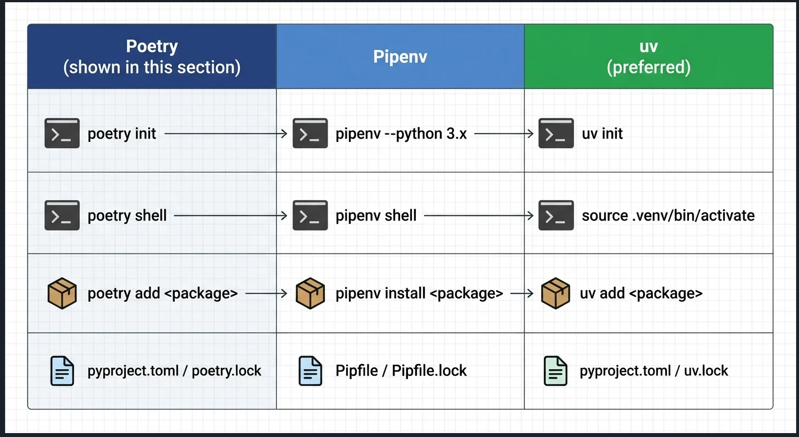
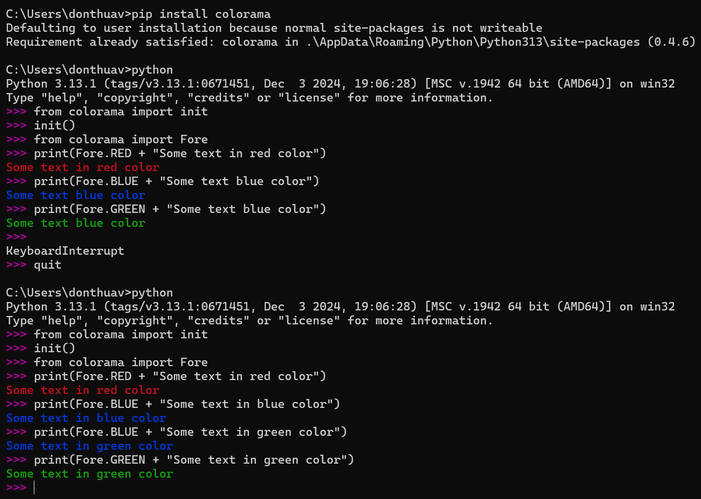

What’s in this project
Runnable scripts, Jupyter notebooks, and markdown notes covering core Python topics: packages, errors, testing, decorators, and more.
Decorators
Functions as first-class objects and @ syntax.
Packages
Modules, packages, and imports.
Package managers
Comparison of pip, Poetry, and uv:
notes.md
·

Course content overview
- Introduction, Python 2 vs 3, setup / Jupyter
- Data structures — numbers, strings, lists, tuples, sets, dictionaries, files
- Comparison operators and statements (
if, loops, range)
- Methods and functions; milestone projects
- OOP, errors/exceptions, modules and packages
- Built-ins (
map, filter, zip, …), decorators, generators
- Capstone and advanced modules
Slides:
Google Drive folder
Full typed notes (data types, strings, and more) are in the markdown file linked above.
Why use one
- Avoid dependency version conflicts across projects
- Isolate packages from system Python
- Make setups reproducible across machines
Full write-up: virtual-environments.md
Create & activate (venv)
python -m venv project-1
cd project-1
Scripts\activate # Windows
# source bin/activate # macOS / Linux
Install & run
pip install cowsay
py cowsay-test.py
deactivate
venv vs virtualenv vs Poetry
| Tool |
Best for |
venv |
Simple isolation (built into Python 3.3+) |
virtualenv |
Legacy / faster creation / extra options |
| Poetry |
Environments + dependencies + publishing |
Tip: For most modern projects use venv or Poetry / uv. See the markdown note for Poetry workflow details.
PyPI
Python Package Index notes.
Open these in Jupyter, VS Code, or Google Colab.
Interactive examples live in the notebook:
Typical patterns
with open("data.txt", "r", encoding="utf-8") as f:
content = f.read()
with open("out.txt", "w", encoding="utf-8") as f:
f.write("hello")
Prefer with open(...) so files close automatically, even if an error occurs.
animal.py / dog.py show a simple module import related to class/module layout:
# from packages-modules folder
py dog.py
# I am an animal
Simple module import
C:\...\packages-modules> py dog.py
I am an animal
Package & subpackage
from MainPackage import main_package
from MainPackage.SubPackage1 import sub_package_1, sub_report2
main_package.main_report()
sub_package_1.sub_report1()
sub_report2()
Run (from packages-modules):
py use_packages.py
Expected output:
I am MainPackage.main_report
I am SubPackage1.sub_report1
I am SubPackage1.sub_report2
Run from the packages-modules directory so MainPackage is on the Python path. Ensure __init__.py files exist in the package folders.
try / except / else / finally
def ask_for_input():
while True:
try:
number = int(input("Enter number: "))
except:
print("Not a number, try again")
continue
else:
print(f"Entered number: {number}")
break
finally:
print("Finally executed")
try_except() — bare except on invalid additiontry_except_else() — else runs when no errorseparate_except_blocks() — handlers for TypeError, OSError, etc.try_finally() — finally always runsask_for_input() — loop until valid int (default when you run the script)
Run (from error-exception-handling):
py error_exception_handling.py
py practice.py
Code under test
def cap_text(text):
return text.title()
Test case
import unittest
import cap
class TestCap(unittest.TestCase):
def test_one_word(self):
self.assertEqual(cap.cap_text("python"), "Python")
def test_multiple_words(self):
self.assertEqual(cap.cap_text("python hello world"), "Python Hello World")
if __name__ == "__main__":
unittest.main()
Run (from unit-testing):
py test_cap.py
py -m unittest test_cap -v
py -m pylint cap.py
Functions as first-class objects
def function1():
return "method1"
myFunction1 = function1
print(function1()) # method1
print(myFunction1()) # method1
Manual decorator
def decorator1(my_func):
def wrap_func():
print("Some extra code before original function")
my_func()
print("Some extra code after original function")
return wrap_func
def function4():
print("Inside function4")
decorated_function = decorator1(function4)
decorated_function()
@ syntax
@decorator1
def function5():
print("Inside function5")
function5()
Run (from decorators):
py decorators.py
Direct run
# main_function.py
print("__name__: ", __name__)
print("Hello world")
def method1():
print("method1")
if __name__ == "__main__":
print("Running main function")
method1()
py main_function.py
# __name__: __main__
# Hello world
# Running main function
# method1
Imported by another module
main_function_2.py imports methods from main_function.py. Top-level prints in the imported module still run; the if __name__ == "__main__" block does not.
py main_function_2.py
# __name__: main_function
# Hello world
# __name__: __main__
# Hello world 2
# Running main function2
# ...
Install
pip install colorama
Basic usage
from colorama import init, Fore
init()
print(Fore.RED + "Some text in red color")
print(Fore.BLUE + "Some text in blue color")
print(Fore.GREEN + "Some text in green color")
Call init() once so ANSI color codes work correctly on Windows terminals.
Session screenshot

{kind=link}